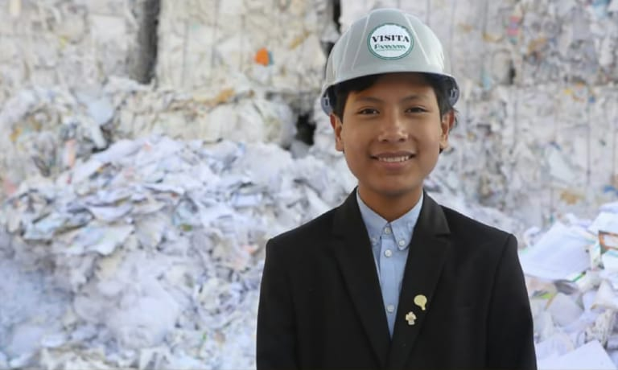
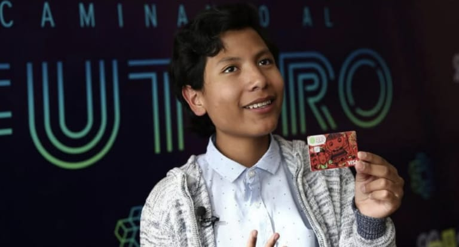

Aos 7 anos, um menino peruano transformou o lixo das ruas de sua cidade em uma lição de educação financeira: ele criou um banco onde crianças trocam materiais recicláveis por dinheiro e aprendem a poupar.
O pequeno jovem uniu renda e sustentabilidade. Observando o lixo acumulado nas ruas de sua cidade, José Adolfo encontrou uma solução criativa: transformar materiais recicláveis em uma forma de gerar renda.
Assim, cada criança podia aprender sobre dinheiro enquanto cuidava do planeta.

José Adolfo apresentando o cartão do banco que criou para crianças
No banco, os pequenos clientes definem metas de poupança e só podem sacar o dinheiro quando as atingirem. Para participar, precisam entregar uma quantidade mínima de recicláveis todos os meses.
José Adolfo em visita a uma cooperativa de reciclagem
A ideia começou pequena, mas mostrou que crianças também podem cuidar do meio ambiente e aprender sobre dinheiro ao mesmo tempo — provando que boas soluções nem sempre precisam vir de adultos.
Fonte: Instituto Mandarina